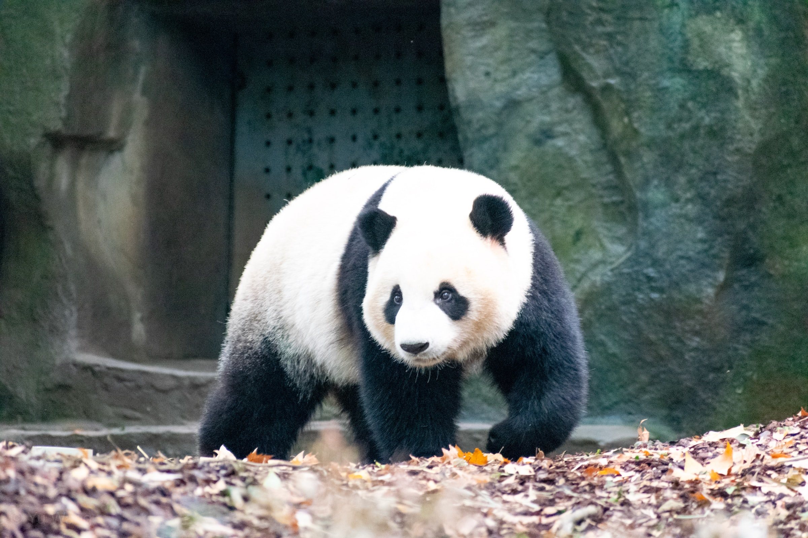

目錄
- 保護熊貓
- 熊貓的簡介
- 熊貓表格
- 熊貓近年發展
- 熊貓圖片
- 相關連結
熊貓的簡介
大貓熊（學名：Ailuropoda
melanoleuca），也稱作大熊貓，一般稱為「貓熊」或「熊貓」，屬於食肉目熊科的一種哺乳動物，體色為黑白兩色。貓熊是中國特有物種，現存的主要棲息地是中國中西部四川盆地周邊的山區和陝西南部的秦嶺地區。全世界野生大貓熊現存大約有2,060頭（2016年數據[2]）。2016年末，世界自然保護聯盟（IUCN）將大貓熊的受威脅等級從「瀕危級」降為「易危級」。
熊貓表格
| 熊貓國家表格 |
| 國家 |
年分 |
熊貓名字 |
| 墨西哥 |
1975 |
迎迎&貝貝 |
| 台灣 |
2008 |
團團&圓圓 |
| 日本 |
2011 |
比力&仙女 |
熊貓近年發展
-
截至2004年，一個為期4年的《全國第三次大貓熊調查報告》統計指出野外大貓熊總數約為1596隻，較1985年的1114隻為多。其中僅約有273隻野生秦嶺大貓熊，僅佔全國大貓熊總數的17％。
-
2008年汶川大地震使大貓熊的命運再受挑戰，當中臥龍自然保護區這塊重要的棲息地遭受破壞。
-
2016年9月，隨著貓熊數量持續增加，國際自然保護聯盟在《紅色名錄》將其保護狀態從瀕危調整為易危。
熊貓圖片

相關連結